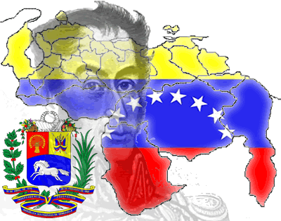

Profesora: Carmen Gonzalez
unidades de credito: 0 u/c
código de materia: ADG-10821
salón: piso 3/15
horas a la semana: 2
descripción: Catedra Bolivariana está comprometido con un mundo de interrelaciones, en el que los saberes no son estáticos ni está encerrado en espacios restringidos, sino que andan en constante movimiento, dispersos en infinitas redes. Estos materiales didácticos apuntan a potenciar los vínculos, activar los contactos, descubrir los enlaces. El aprendizaje significativo, que cultivamos como una de las premisas conceptuales de todos nuestros materiales didácticos, tiene una importancia creciente en esta serie, pues atiende las necesidades de estudiantes que ya han avanzado a otra fase de su educación formal. La necesidad de que las competencias adquiridas sean útiles para la vida es en Conexos una estrategia vital.
